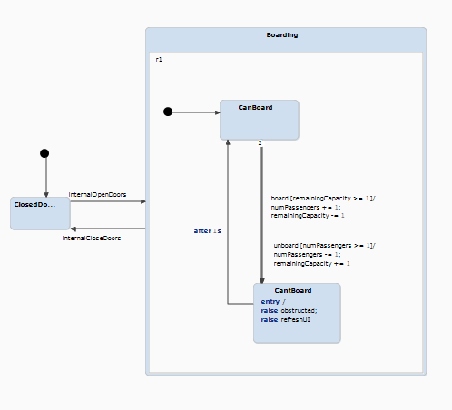
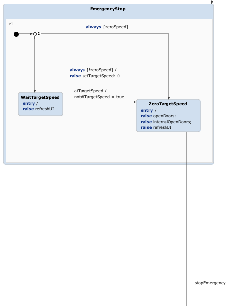

Feedback
We feel like we had a wrong approach because we worked about 14h on this assignment together. We were always struggling with Yakindu and their awful UI/ refactoring experience. When we had a bug we were never sure if it was caused by a bug in the software or a logic error. Just to give an example on which we spent several hours we had a test with two enter and exits. For some reason they influenced each other as running only one worked, and running only the other also worked but having them together broke everything. Furthermore debugging needed to be done with active commands which was slow and painful. Lastly when moving composite states, transitions would randomly disappear.
Workflow
Now that all the courses are online again we almost had no choice but to work over Discord. Basil streamed while I (Thomas) watched and tried to spot errors or give some pointers. We started by making a rough outline of the system, reading everything and implementing it. After having our main architecture we re-read the requirements, made tests and fine-tuned each component separately. Finally, we wrote some extra tests to get the 100% transition coverage.
Architecture
We will explain the high level architecture of our statechart without diving into the details. First of, our 'main' orthogonal state has four components: requesting stops, main logic, boarding logic and a helper for the approaching station event.
The order of these states is important because the order for event priority is based on this. We'll start by explaining the smaller parts.
The transition logic in the request stop is the bit manipulation and to check whether the station we are at right now cannot be re-requested if we are standing still. This is done though some logic with the zero speed variable.
In our board-unboard we have the logic for incrementing and decrementing the passenger count and free places for board and unboard respectively. We also verify for 'illegal' boards and unboards meaning boarding in a full trolley and unboarding an empty trolley. As you can barely see on the image, we use a double arrow for the transition.
Lastly we have our helper which just transforms the approaching station to the effective station which is used throughout our system.
Our main logic is again separated in several components, the main ones being the emergency stop which will check the state and act accordingly, the at station logic, closing and opening doors and lastly the moving stage which will handle the departing and arriving logic.
We highlight the pre-departing logic. As stated in the requirements we need to have waited 2s and another stations needs to be requested. If a station is set after two seconds, we unset it and go to the closing doors sequence. Otherwise, we wait until a station that is not the current station is set.
After this we go to the closing doors sequence. Here we switch between obstructed and waiting, every time a person tries to board or unboard. This way we assure that we can (un)board again after 1s and not have doors that close. The board unboard component sends out the obstructed and handles the logic, so we can omit it here.
Going further we enter the moving sequence where we set the target, wait until it is reached and slow down again if approaching a wanted station.
Finally we have the emergency logic, were we check if a trolley is at a station or not. If not we slow down and then open the doors otherwise we immediately open the doors. We can then only stop the emergency if the trolley is at a standstill.
Notes
You have probably already noticed some extra events like internalOpenDoors. These are there because Yakindu's asserts somehow handled them unexpected with them breaking our system.